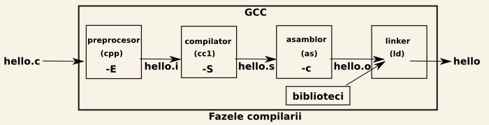

Table of Contents
Laborator 01 - Introducere
Scop
- introducerea în tematica laboratorului
- familiarizarea cu mediul și uneltele folosite în cadrul laboratorului
Cuvinte cheie
- programare de sistem, C, compilare, depanare, biblioteci
- gcc, make, gdb
- cl, nmake, Visual Studio
Materiale ajutătoare
Nice to read
- TLPI - Chapter 3, System Programming Concepts
- WSP4 - Chapter 1, Getting started with Windows
Desfășurarea laboratorului
Laboratorul de Sisteme de Operare este unul de programare de sistem având drept scop aprofundarea conceptelor prezentate la curs și prezentarea interfețelor de programare oferite de sistemele de operare (system API). Un laborator va prezenta un anumit set de concepte și va conține următoarele activități:
- prezentare teoretică
- parcurgerea exercițiilor rezolvate
- rezolvarea exercițiilor propuse
Pentru o desfășurare cât mai bună a laboratorului și o înțelegere deplină a conceptelor vă recomandăm să parcurgeți conținutul laboratorului de acasă. De asemenea, pentru consolidarea cunoștințelor folosiți suportul de laborator prezentat în paragraful următor.
Suport de laborator
Prezentare
Pentru a oferi o arie de cuprindere cât mai largă, laboratoarele au ca suport familiile de sisteme de operare Unix și Windows. Instanțele de sisteme de operare din familiile de mai sus alese pentru acest laborator sunt GNU/Linux, respectiv Windows 7.
În cadrul acestui laborator introductiv va fi prezentat mediul de lucru care va fi folosit în cadrul laboratorului de Sisteme de Operare cât și în rezolvarea temelor de casă.
Laboratorul folosește ca suport de programare limbajul C/C++. Pentru GNU/Linux se va folosi suita de compilatoare GCC, iar pentru Windows compilatorul Microsoft pentru C/C++ cl. De asemenea, pentru compilarea incrementală a surselor se vor folosi GNU make (Linux), respectiv nmake (Windows). Exceptând apelurile de bibliotecă standard, API-ul folosit va fi POSIX, respectiv Win32.
Linux
GCC
GCC este suita de compilatoare implicită pe majoritatea distribuțiilor Linux. Pentru mai multe detalii despre proiectul GCC apăsați pe butonul Click to display (de acum înainte secțiunile suplimentare vor fi ascunse folosind astfel de butoane).
În cadrul laboratoarelor de Sisteme de Operare ne vom concentra asupra facilităților oferite de compilator pentru limbajele C și C++. GCC are suport pentru standardele ANSI, ISO C, ISO C99, ISO C11, POSIX, dar și multe extensii folositoare care nu sunt incluse în niciunul din standarde; unele dintre aceste extensii vor fi prezentate în secțiunile ce urmează.
Utilizare GCC
Vom folosi pentru exemplificare un program simplu care tipărește la ieșirea standard un șir de caractere.
GCC folosește pentru compilarea de programe C/C++ comanda gcc, respectiv g++. O invocare tipică este pentru compilarea unui program dintr-un singur fișier sursă, în cazul nostru hello.c.
so@spook$ ls hello.c so@spook$ gcc hello.c so@spook$ ls a.out hello.c so@spook$ ./a.out SO, ... hello world! |
so@spook$ ls hello.c so@spook$ gcc hello.c -o hello so@spook$ ls hello hello.c so@spook$ ./hello SO, ... hello world! |
Așadar, comanda gcc hello.c a fost folosită pentru compilarea fișierului sursă hello.c. Rezultatul a fost obținerea fișierului executabil a.out (nume implicit utilizat de gcc). Dacă se dorește obținerea unui executabil cu un alt nume se poate folosi opțiunea -o.
În mod similar se poate folosi g++ pentru compilarea unui program sursă C++.
Fazele compilării
Compilarea se referă la obținerea unui fișier executabil dintr-un fișier sursă. După cum am văzut în paragraful anterior comanda gcc a dus la obținerea fişierului executabil hello din fişierul sursă hello.c. Intern, gcc trece prin mai multe faze de prelucrare a fişierului sursă până la obținerea executabilului. Aceste faze sunt evidențiate în diagrama de mai jos:

Opţiuni
Implicit, la o invocare a comenzii gcc/g++ se obţine din fişierul sursă un executabil. Folosind diverse opțiuni, putem opri compilarea la una din fazele intermediare astfel:
-E- se realizează doar preprocesarea fişierului sursăgcc -E hello.c– va genera fişierul preprocesat pe care, implicit, îl va afişa la ieşirea standard.
-S- se realizează inclusiv faza de compilaregcc -S hello.c– va genera fişierul în limbaj de asamblarehello.s
-c- se realizează inclusiv faza de asamblaregcc -c hello.c– va genera fişierul obiecthello.o
Opţiunile de mai sus pot fi combinate cu -o pentru a specifica fişierul de ieşire.
Preprocesarea
Preprocesarea presupune înlocuirea directivelor de preprocesare din fişierul sursă C. Directivele de preprocesare încep cu #. Printre cele mai folosite sunt:
#include– pentru includerea fişierelor header într-un alt fișier.#defineși#undef– pentru definirea, respectiv anularea definirii de macrouri.#if,#ifdef,#ifndef,#else,#elif,#endif, pentru compilarea condiţionată.- utile pentru comentarea bucăților mari de cod. Pentru a comenta toată funcția
do_evil_thingsde mai jos nu putem folosi comentarii de tip C, ca în exemplul din dreapta, întrucat limbajul C nu permite comentariile imbricate. În astfel de cazuri se poate folosi directiva#if <condiţie>ca în exemplul din stânga.
#if 0 int do_evil_things(context_t *ctx) { int go_drink; /* set student mode ON :) */ ctx->go_drink = NO; } #endif |
/* int do_evil_things(context_t *ctx) { int go_drink; /* set student mode ON :) */ ctx->go_drink = NO; } * |
- utile pentru evitarea includerii de mai multe ori a unui fişier header, tehnică numită include guard.
__FILE__,__LINE__,__func__sunt înlocuite cu numele fişierului, linia curentă în fișier şi numele funcției- operatorul
#este folosit pentru a înlocui o variabilă transmisă unui macro cu numele acesteia.
#include <stdio.h> #define show_var(a) printf("Variable %s has value %d\n", #a, a) int main(void) { int teh_var = 42; show_var(teh_var); return 0; } |
so@spook$ gcc -o show show.c so@spook$ ls show show.c so@spook$ ./show Variable teh_var has value 42 |
- operatorul
##(token paste) este folosit pentru concatenarea între un argument al macrodefiniţiei și un alt şir de caractere sau între două argumente ale macrodefiniţiei.
Depanarea folosind directive de preprocesare
De multe ori, un dezvoltator va dori să poată activa sau dezactiva foarte facil afişarea de mesaje suplimentare (de informare sau de debug) în sursele sale.
Compilarea
Compilarea este faza în care din fişierul preprocesat se obţine un fişier în limbaj de asamblare.
so@spook$ ls hello.c so@spook$ gcc -S hello.c so@spook$ ls hello.c hello.s
Asamblarea
Asamblarea este faza în care codul scris în limbaj de asamblare este tradus în cod mașină reprezentând codificarea binară a instrucțiunilor programului iniţial. Fişierul obţinut poartă numele de fişier cod obiect, se obţine folosind opţiunea -c a compilatorului şi are extensia .o.
so@spook$ ls hello.c so@spook$ gcc -c hello.c so@spook$ ls hello.c hello.o
Editarea de legături
Pentru obținerea unui fişier executabil este necesară rezolvarea diverselor simboluri prezente în fişierul obiect. Această operaţie poartă denumirea de editare de legături, link-editare, linking sau legare.
void f(void); /* * no definition for f here */ int main(void) { f(); return 0; } |
void f(void); void f(void) { } int main(void) { f(); return 0; } |
so@spook$ ls sample.c so@spook$ gcc -c -o sample.o sample.c so@spook$ ls sample.c sample.o so@spook$ gcc -o sample sample.c /tmp/ccOVreJg.o: In function `main': sample.c:(.text+0x7): undefined reference to `f' collect2: ld returned 1 exit status |
so@spook$ ls sample.c so@spook$ gcc -c -o sample.o sample.c so@spook$ ls sample.c sample.o so@spook$ gcc -o sample sample.c so@spook$ ls sample sample.c sample.o |
Observăm că în partea stângă deși am obținut fișierul obiect sample.o, linkerul nu poate genera fişierul executabil întrucât nu găseşte definiţia funcţiei f. În partea dreaptă totul decurge normal, definiţia funcţiei f fiind inclusă în fişierul sursă.
Activarea avertismentelor
În mod implicit, o rulare a gcc oferă puține avertismente utilizatorului. Pentru a activa afișarea de avertismente se folosesc opțiunile de tip -W cu sintaxa -Woptiune-avertisment. optiune-avertisment poate lua mai multe valori posibile printre care return-type, switch, unused-variable, uninitialized, implicit, all. Folosirea opțiunii -Wall înseamnă afișarea tuturor avertismentelor care pot cauza inconsistențe la rulare.
Considerăm ca fiind indispensabilă folosirea opțiunii -Wall pentru a putea detecta încă din momentul compilării posibilele erori. O cauză importantă a aparițiilor acestor erori o constituie sintaxa foarte permisivă a limbajului C. Sperăm ca exemplul de mai jos să justifice utilitatea folosirii opțiunii -Wall:
so@spook$ ls middle.c so@spook$ gcc -o middle middle.c so@spook$ ./middle Middle of interval [10, 20] is 10 so@spook$ gcc -Wall -o middle middle.c middle.c: In function ‘main’: middle.c:8: warning: suggest parentheses around ‘+’ inside ‘>>’ |
La prima rulare, rezultatul nu e nici pe departe cel așteptat. Eroarea poate fi detectată ușor dacă includem și opțiunea -Wall la compilare. (operatorul + are prioritate în fața operatorului >>)
Opțiuni utile
Compilarea din mai multe fișiere
Exemplele de până acum tratează programe scrise într-un singur fișier sursă. În realitate, aplicațiile sunt complexe și scrierea întregului cod într-un singur fișier îl face greu de menținut și greu de extins. În acest sens aplicația este scrisă în mai multe fișiere sursă denumite module. Un modul conține, în mod obișnuit, funcții care îndeplinesc un rol comun.
Următoarele fișiere sunt folosite ca suport pentru a exemplifica modul de compilare a unui program provenind din mai multe fișiere sursă:
|
|
În programul de mai sus se apelează funcțiile f1 și f2 în funcția main pentru a afișa diverse informații. Pentru compilarea acestora se transmit toate fișierele C ca argumente către gcc:
so@spook$ ls f1.c f2.c main.c util.h so@spook$ gcc -Wall main.c f1.c f2.c -o main so@spook$ ls f1.c f2.c main main.c util.h so@spook$ ./main Current file name f1.c Current line 8 in file f2.c
Executabilul a fost denumit main; pentru acest lucru s-a folosit opțiunea -o.
Se observă folosirea fișierului header util.h pentru declararea funcțiilor f1 și f2. Declararea unei funcții se realizează prin precizarea antetului. Fișierul header este inclus în fișierul main.c pentru ca acesta să aibă cunoștință de formatul de apel al funcțiilor f1 și f2. Funcțiile f1 și f2 sunt definite, respectiv, în fișierele f1.c și f2.c. Codul acestora este integrat în executabil în momentul link-editării.
În general, pentru obținerea unui executabil din surse multiple se obișnuiește compilarea fiecărei surse până la modul obiect și apoi link-editarea acestora:
so@spook$ ls f1.c f2.c main.c util.h so@spook$ gcc -Wall -c f1.c so@spook$ gcc -Wall -c f2.c so@spook$ gcc -Wall -c main.c so@spook$ ls f1.c f1.o f2.c f2.o main.c main.o util.h so@spook$ gcc -o main main.o f1.o f2.o so@spook$ ls f1.c f1.o f2.c f2.o main main.c main.o util.h so@spook$ ./main Current file name f1.c Current line 8 in file f2.c
Se observă obținerea executabilului main prin legarea modulelor obiect. Această abordare are avantajul eficienței. Dacă se modifică fișierul sursă f2.c atunci doar acesta va trebui compilat și refăcută link-editarea. Dacă s-ar fi obținut un executabil direct din surse atunci s-ar fi compilat toate cele trei fișiere și apoi refăcută link-editarea. Timpul consumat ar fi mult mai mare, în special în perioada de dezvoltare când fazele de compilare sunt dese și se dorește compilarea doar a fișierelor sursă modificate.
Scăderea timpului de dezvoltare prin compilarea numai a surselor care au fost modificate este motivația de bază pentru existența utilitarelor de automatizare precum make sau nmake.
Biblioteci în Linux
O bibliotecă este o colecție de funcții precompilate. În momentul în care un program are nevoie de o funcție, linker-ul va apela respectiva funcție din bibliotecă. Numele fișierului reprezentând biblioteca trebuie să aibă prefixul lib:
so@spook$ ls -l /usr/lib/libm.* -rw-r--r-- 1 root root 496218 2010-01-03 15:19 /usr/lib/libm.a lrwxrwxrwx 1 root root 14 2010-01-14 12:17 /usr/lib/libm.so -> /lib/libm.so.6
Biblioteca matematică este denumită libm.a sau libm.so. În Linux bibliotecile sunt de două tipuri:
- statice - au, de obicei, extensia .a
- partajate - au extensia .so
Legarea se face folosind opțiunea -l transmisă comenzii gcc. Astfel, dacă se dorește folosirea unor funcții din math.h, trebuie legată biblioteca matematică:
so@spook$ ls cbrt.c so@spook$ gcc -Wall -o cbrt cbrt.c /tmp/ccwvm1zq.o: In function `main': cbrt.c:(.text+0x1b): undefined reference to `cbrt' collect2: ld returned 1 exit status so@spook$ gcc -Wall -o cbrt cbrt.c -lm so@spook$ ./cbrt Cubic root for 1000 is 10 |
Se observă că, în primă fază, nu s-a rezolvat simbolul cbrt. După legarea bibliotecii matematice, programul s-a compilat și a rulat fără probleme.
Crearea unei biblioteci statice
Pentru crearea de biblioteci vom folosi fișierele din secțiunea Compilarea din mai multe fișiere. Vom include modulele obiect rezultate din fișierele sursă f1.c și f2.c într-o bibliotecă pe care o vom folosi ulterior pentru obținerea executabilului final.
Primul pas constă în obținerea modulelor obiect asociate:
so@spook$ gcc -Wall -c f1.c so@spook$ gcc -Wall -c f2.c
O bibliotecă statică este o arhivă ce conține fișiere obiect creată cu ajutorul utilitarului ar ( interpretați parametrii rc).
so@spook$ ar rc libintro.a f1.o f2.o so@spook$ gcc -Wall main.c -o main -lintro /usr/bin/ld: cannot find -lintro collect2: ld returned 1 exit status |
so@spook$ gcc -Wall main.c -o main -lintro -L. so@spook$ ./main Current file name is f1.c Current line 5 in file f2.c |
Atenție: -lintro trebuie să apară după specificarea sursei
Linker-ul returnează eroare precizând că nu găsește biblioteca libintro. Aceasta deoarece linker-ul nu a fost configurat să caute și în directorul curent. Pentru aceasta se folosește opțiunea -L, urmată de directorul în care trebuie căutată biblioteca (în cazul nostru este vorba de directorul curent).
Dacă biblioteca se numește libnume.a, atunci ea va fi referită cu -lnume
Crearea unei biblioteci partajate
Spre deosebire de o bibliotecă statică despre care am văzut că nu este nimic altceva decât o arhivă de fișiere obiect, o bibliotecă partajată este ea însăși un fișier obiect. Crearea unei biblioteci partajate se realizează prin intermediul linker-ului. Optiunea -shared indică compilatorului să creeze un obiect partajat și nu un fișier executabil. Este, de asemenea, indicată folosirea opțiunii -fPIC la crearea fișierelor obiect.
so@spook$ gcc -fPIC -c f1.c so@spook$ gcc -fPIC -c f2.c so@spook$ gcc -shared f1.o f2.o -o libintro_shared.so so@spook$ gcc -Wall main.c -o main -lintro_shared -L. so@spook$ ./main ./main: error while loading shared libraries: libintro_shared.so: cannot open shared object file: No such file or directory
La rularea executabilului se poate observa că nu se poate încărca biblioteca partajată. Cauza este deosebirea dintre bibliotecile statice și bibliotecile partajate. În cazul bibliotecilor statice codul funcției de bibliotecă este copiat în codul executabil la link-editare. De partea cealaltă, în cazul bibliotecilor partajate, codul este încărcat în memorie în momentul rulării.
Astfel, în momentul rulării unui program, loader-ul (programul responsabil cu încărcarea programului în memorie), trebuie să știe unde să caute biblioteca partajată pentru a o încărca în memorie în cazul în care aceasta nu a fost încărcată deja. Loader-ul folosește câteva căi predefinite (/lib, /usr/lib etc) și de asemenea locații definite în variabila de mediu LD_LIBRARY_PATH:
so@spook$ export LD_LIBRARY_PATH=$LD_LIBRARY_PATH:. so@spook$ ./main Current file name is f1.c Current line 5 in file f2.c
În exemplul de mai sus variabilei de mediu LD_LIBRARY_PATH i-a fost adăugată calea către directorul curent rezultând în posibilitatea rulării programului. LD_LIBRARY_PATH va rămâne modificată cât timp va rula consola curentă. Pentru a face o modificare a unei variabile de mediu doar pentru o instanță a unui program se face atribuirea noii valori înaintea comenzii de execuție:
so@spook$ LD_LIBRARY_PATH=$LD_LIBRARY_PATH:. ./main Fisierul curent este f1.c Va aflati la linia 5 din fisierul f2.c so@spook$ ./main ./main: error while loading shared libraries: libintro_shared.so: cannot open shared object file: No such file or directory
GNU Make
Make este un utilitar care permite automatizarea și eficientizarea sarcinilor. În mod particular este folosit pentru automatizarea compilării programelor. După cum s-a precizat, pentru obținerea unui executabil provenind din mai multe surse este ineficientă compilarea de fiecare dată a fiecărui fișier și apoi link-editarea. Se compilează fiecare fișier separat, iar la o modificare se va recompila doar fișierul modificat.
Exemplu simplu de Makefile
Utilitarul make folosește un fișier de configurare denumit Makefile. Un astfel de fișier conține reguli și comenzi de automatizare.
|
so@spook$ make gcc -Wall hello.c -o hello so@spook$ ./hello SO, ... hello world! |
so@spook$ make clean rm -f hello so@spook$ make all gcc -Wall hello.c -o hello |
Exemplul prezentat mai sus conține două reguli: all și clean. La rularea comenzii make se execută prima regulă din Makefile (în cazul de față all, nu contează în mod special denumirea). Comanda executată este gcc -Wall hello.c -o hello. Se poate preciza explicit ce regulă să se execute prin transmiterea ca argument comenzii make. (comanda make clean pentru a șterge executabilul hello și comanda make all pentru a obține din nou acel executabil).
În mod implicit, GNU Make caută, în ordine, fișierele GNUmakefile, Makefile, makefile și le analizează. Pentru a preciza ce fișier Makefile trebuie analizat, se folosește opțiunea -f. Astfel, în exemplul de mai jos, folosim fișierul Makefile.ex1:
so@spook$ mv Makefile Makefile.ex1 so@spook$ make make: *** No targets specified and no makefile found. Stop. so@spook$ make -f Makefile.ex1 gcc -Wall hello.c -o hello so@spook$ make -f Makefile.ex1 clean rm -f hello
Sintaxa unei reguli
În continuare este prezentată sintaxa unei reguli dintr-un fișier Makefile:

- target - este, de obicei, fișierul care se va obține prin rularea comenzii command. După cum s-a observat și din exemplul anterior, poate să fie o țintă virtuală care nu are asociat un fișier.
- prerequisites - reprezintă dependențele necesare pentru a urmări regula; de obicei sunt fișiere necesare pentru obținerea țintei.
- <tab> - reprezintă caracterul tab și trebuie neaparat folosit înaintea precizării comenzii.
- command - o listă de comenzi (niciuna, una, oricâte) rulate în momentul în care se trece la obținerea țintei.
Un exemplu indicat pentru un fișier Makefile este:
- Makefile.ex2
all: hello hello: hello.o gcc hello.o -o hello hello.o: hello.c gcc -Wall -c hello.c clean: rm -f *.o *~ hello
Se observă prezența regulii all care va fi executată implicit.
- all are ca dependență
helloși nu execută nicio comandă; - hello are ca dependență
hello.oși realizează link-editarea fișieruluihello.o; - hello.o are ca dependență
hello.cși realizează compilarea și asamblarea fișieruluihello.c.
Pentru obținerea executabilului se folosește comanda:
so@spook$ make -f Makefile.ex2 gcc -Wall -c hello.c gcc hello.o -o hello
Funcționarea unui fișier Makefile
Pentru obținerea unui target trebuie satisfăcute dependențele (prerequisites) acestuia. Astfel, pentru obținerea targetului implicit (primul target), în cazul nostru all:
- pentru obținerea target-ului
alltrebuie obținut target-ulhello, care este un nume de executabil - pentru obținerea target-ului
hellotrebuie obținut target-ulhello.o - pentru obținerea target-ului
hello.otrebuie obținuthello.c; acest fișier există deja, și cum acesta nu apare la rândul lui ca target înMakefile, nu mai trebuie obținut - drept urmare se rulează comanda asociată obținerii
hello.o; aceasta estegcc -Wall -c hello.c - rularea comenzii duce la obținerea target-ului
hello.o, care este folosit ca dependență pentruhello - se rulează comanda
gcc hello.o -o hellopentru obținerea executabiluluihello helloeste folosit ca dependență pentruall; acesta nu are asociată nicio comandă deci este automat obținut.
De remarcat este faptul că un target nu trebuie să aibă neapărat numele fișierului care se obține. Se recomandă, însă, acest lucru pentru înțelegerea mai ușoară a fișierului Makefile, și pentru a beneficia de faptul că make utilizează timpul de modificare al fișierelor pentru a decide când nu trebuie să facă nimic.
Acest format al fișierului Makefile are avantajul eficientizării procesului de compilare. Astfel, după ce s-a obținut executabilul hello conform fișierului Makefile anterior, o nouă rulare a make nu va genera nimic:
so@spook$ make -f Makefile.ex2 make: Nothing to be done for 'all'.
Folosirea variabilelor
Un fișier Makefile permite folosirea de variabile. Astfel, un exemplu uzual de fișier Makefile este:
- Makefile.ex3
CC = gcc CFLAGS = -Wall -g all: hello hello: hello.o $(CC) $^ -o $@ hello.o: hello.c $(CC) $(CFLAGS) -c $< .PHONY: clean clean: rm -f *.o *~ hello
În exemplul de mai sus au fost definite variabilele CC și CFLAGS. Variabila CC reprezintă compilatorul folosit, iar variabila CFLAGS reprezintă opțiunile (flag-urile) de compilare utilizate; în cazul de față sunt afișarea avertismentelor și compilarea cu suport de depanare. Referirea unei variabile se realizează prin intermediul construcției $(VAR_NAME). Astfel, $(CC) se înlocuiește cu gcc, iar $(CFLAGS) se înlocuiește cu -Wall -g.
Variabile predefinite folositoare sunt:
- $@ se expandează la numele target-ului.
- $^ se expandează la lista de cerințe.
- $< se expandează la prima cerință.
Pentru mai multe detalii despre variabile consultați pagina info [1] sau manualul online [2]
Folosirea regulilor implicite
De foarte multe ori nu este nevoie să se precizeze comanda care trebuie rulată; aceasta poate fi detectată implicit.
main.o: main.c |
so@spook$ $(CC) $(CFLAGS) -c -o $@ $< |
Astfel, fișierul Makefile.ex2 de mai sus poate fi simplificat, folosind reguli implicite, ca mai jos:
so@spook$ make -f Makefile.ex4 gcc -Wall -g -c -o hello.o hello.c gcc hello.o -o hello |
so@spook$ make -f Makefile.ex5 gcc -Wall -g -c -o hello.o hello.c gcc hello.o -o hello |
De remarcat faptul că dacă avem un singur fișier sursă nici nu trebuie să existe un fișier Makefile pentru a obține executabilul dorit.
so@spook$ls hello.c so@spook$ make hello cc hello.c -o hello
Pentru mai multe detalii despre reguli implicite consultați pagina info [3] sau manualul online [4].
Depanarea programelor
Există câteva unelte GNU care pot fi folosite atunci când nu reușim să facem un program să ne asculte. gdb, acronimul de la “Gnu DeBugger” este probabil cel mai util dintre ele, dar există și altele, cum ar fi ElectricFence, gprof sau mtrace. gdb este prezentat pe scurt aici.
Windows
Compilatorul Microsoft cl.exe
Soluția folosită pentru platforma Windows în cadrul acestui laborator este cl.exe, compilatorul Microsoft pentru C/C++. Recomandăm instalarea Microsoft Visual C++ Express 2010 (10.0) (versiunea Professional a Visual C++ este disponibilă gratuit în cadrul MSDNAA). Programele C/C++ pot fi compilate prin intermediul interfeței grafice sau în linie de comandă. În cele ce urmează vom prezenta compilarea folosind linia de comandă. În Windows fișierele cod obiect au extensia *.obj.
cl hello.c $ cl /? /* list of options for compiler */ $ link /? /* list of options for linker */ |
Se vor prezenta mai jos o serie de opțiuni uzuale:
- /Wall - activează toate warning-urile
- /LIBPATH:<dir> - această opțiune indică linker-ului să caute și în directorul dir bibliotecile pe care trebuie să le folosească programul; opțiunea se folosește după /link
- /I<dir> - caută și în acest director fișierele incluse prin directiva include
- /c - se va face numai compilarea, adică se va omite etapa de link-editare.
- /D<define_symbol> - definirea unui macro de la compilare
|
Opțiuni privind optimizarea codului:
|
Setarea numelui pentru diferite fișiere de ieșire:
|
Exemple:
- Creare fișier obiect
myobj.objdin sursamysrc.c:cl /Fomyobj.obj /c mysrc.c
- Creare fișier
myasm.asmîn cod de asamblare din sursamysrc.c:cl /Famyasm.asm /FA /c mysrc.c
Lista completă de opțiuni o puteți găsi aici
Biblioteci în Windows
Crearea unor biblioteci statice
Pentru a crea biblioteci statice se folosește comanda lib
>lib /out:<nume.lib> <lista fișiere obiecte>
Vom considera exemplul folosit pentru crearea de biblioteci în Linux (main.c, util.h, f1.c, f2.c):

# obținem fișierul obiect f1.obj din sursa f1.c >cl /c f1.c Microsoft (R) 32-bit C/C++ Optimizing Compiler Version 14.00.50727.42 for 80x86 Copyright (C) Microsoft Corporation. All rights reserved. f1.c #obținem fișierul f2.obj din sursa f2.c >cl /c f2.c Microsoft (R) 32-bit C/C++ Optimizing Compiler Version 14.00.50727.42 for 80x86 Copyright (C) Microsoft Corporation. All rights reserved. f2.c >cl /c main.c Microsoft (R) 32-bit C/C++ Optimizing Compiler Version 14.00.50727.42 for 80x86 Copyright (C) Microsoft Corporation. All rights reserved. main.c #obținem biblioteca statică intro.lib din f1.obj și f2.obj >lib /out:intro.lib f1.obj f2.obj Microsoft (R) Library Manager Version 8.00.50727.42 Copyright (C) Microsoft Corporation. All rights reserved. #intro.lib este compilat împreună cu main.obj pentru a obține main.exe >cl main.obj intro.lib Microsoft (R) 32-bit C/C++ Optimizing Compiler Version 14.00.50727.42 for 80x86 Copyright (C) Microsoft Corporation. All rights reserved. Microsoft (R) Incremental Linker Version 8.00.50727.42 Copyright (C) Microsoft Corporation. All rights reserved. /out:main.exe main.obj intro.lib
Pentru obținerea unei biblioteci statice folosim comanda lib. Argumentul /out: precizează numele bibliotecii statice de ieșire. Biblioteca are de obicei extensia *.lib. Pentru obținerea executabilului se folosește cl care primește ca argumente fișierele obiect și bibliotecile care conțin funcțiile dorite.
Crearea unor biblioteci partajate
Bibliotecile partajate din Linux au ca echivalent bibliotecile DLL (Dynamic Link Library) în Windows. Crearea unei biblioteci partajate pe Windows este mai complicată decât pe Linux. Pe de o parte, pentru că în afara bibliotecii partajate (dll), mai trebuie creată o bibliotecă de import (lib). Pe de altă parte, legarea bibliotecii partajate presupune exportarea explicită a simbolurilor (funcții, variabile) care vor fi folosite.
Pentru precizarea simbolurilor care vor fi exportate de bibliotecă se folosesc identificatori predefiniți:
- __declspec(dllimport), este folosit pentru a importa o funcție dintr-o bibliotecă.
- __declspec(dllexport), este folosit pentru a exporta o funcție dintr-o bibliotecă.
Exemplul de mai jos prezintă trei programe: două dintre ele vor fi legate într-o bibliotecă partajată, iar celălalt conține codul de utilizare a funcțiilor exportate.
|
|
Așadar, pentru crearea bibliotecii partajate și utlizarea acesteia de către programul main parcurgem următorii pași:
f1.cva exporta funcțiaf1()folosind __declspec(dllexport)f2.cva exporta funcțiaf2()folosind __declspec(dllexport)main.cva importa funcțiilef1()șif2()folosind __declspec(dllimport)- după obținerea fișierelor obiect
f1.objșif2.objacestea vor fi folosite la crearea bibliotecii partajate folosind opțiunea/LDa comenziicl. - în final legăm
main.objcu biblioteca partajată și obținemmain.exe

>cl /LD f1.obj f2.obj Microsoft (R) 32-bit C/C++ Optimizing Compiler Version 14.00.50727.42 for 80x86 Copyright (C) Microsoft Corporation. All rights reserved. Microsoft (R) Incremental Linker Version 8.00.50727.42 Copyright (C) Microsoft Corporation. All rights reserved. /out:f1.dll /dll /implib:f1.lib f1.obj f2.obj Creating library f1.lib and object f1.exp >cl main.obj f1.lib Microsoft (R) 32-bit C/C++ Optimizing Compiler Version 14.00.50727.42 for 80x86 Copyright (C) Microsoft Corporation. All rights reserved. Microsoft (R) Incremental Linker Version 8.00.50727.42 Copyright (C) Microsoft Corporation. All rights reserved. /out:main.exe main.obj f1.lib
Alternativ, biblioteca poate fi obținută cu ajutorul comenzii link:
>link /nologo /dll /out:intro.dll /implib:intro.lib f1.obj f2.obj Creating library intro.lib and object intro.exp >link /nologo /out:main.exe main.obj intro.lib >main.exe Current file name is f1.c Current line 6 in file f2.c
Nmake
Nmake este utilitarul folosit pentru compilare incrementală pe Windows. Nmake are o sintaxă foarte asemănătoare cu Make. Un exemplu simplu de makefile este cel atașat parser-ului de la tema 1:
- Makefile
OBJ_LIST = parser.tab.obj parser.yy.obj CFLAGS = /nologo /W4 /EHsc /Za EXE_NAMES = CUseParser.exe UseParser.exe DisplayStructure.exe all : $(EXE_NAMES) CUseParser.exe : CUseParser.obj $(OBJ_LIST) $(CPP) $(CFLAGS) /Fe$@ $** UseParser.exe : UseParser.obj $(OBJ_LIST) $(CPP) $(CFLAGS) /Fe$@ $** DisplayStructure.exe : DisplayStructure.obj $(OBJ_LIST) $(CPP) $(CFLAGS) /Fe$@ $** clean : exe_clean obj_clean obj_clean : del *.obj exe_clean : del $(EXE_NAMES)
Nmake oferă următoarele variabile speciale:
| Macro | Semnificație |
|---|---|
| $@ | numele țintei curente |
| $* | numele țintei curente mai puțin extensia |
| $** | toate dependențele unei ținte |
| $? | toate dependențele mai vechi decât ținta |
Exerciții
- arhiva se găsește în
/home/student/vm - porniți VMPlayer și instalați modulele de kernel.
- porniți mașina virtuală
- nu folosiți VMPlayer în modul full-screen (se blochează)
Exercițiul 1 - Joc interactiv (2p)
- Punctaj: 2 puncte
- Detalii desfășurare joc.
Windows
Exercițiul 2 - Utilizare Visual Studio (3p)
- Punctaj total exercițiu: 3 puncte
2a. Compilare și rulare (1p)
- Punctaj: 1 punct
Pentru acest pas vom folosi proiectul aflat în directorul win/VS Tutorial.
Deschideți proiectul folosind una dintre următoarele trei metode:
- click dreapta pe fișierul
*.sln→ Open with → Microsoft Visual C++ 2010 Express; - deschideți Visual Studio și apoi File → Open → Project/Solution și selectați fișierul
*.slncorespunzător; - dublu click pe fișierul
*.sln.
Dacă Solution Explorer View nu este vizibil (în stânga), îl putecți activa selectând View → Solution Explorer (sau Ctrl+Alt+L).
Pentru a compila proiectul selectați Build → Build Solution sau apăsați tasta F7. În fereastra Output se poate observa output-ul prcesului de compilare. În acest caz, compilarea se va efectua cu succes.
Pentru a rula proiectul selectați Debug → Start Without Debugging sau tastați Ctrl+F5.
Similar cu mediul Linux, executabilele pot fi rulate și din linia de comandă.
PowerShell se poate deschide astfel:
- selectând Tools → PowerShell Command Prompt din Visual Studio;
- folosind link-ul Windows PowerShell aflat pe Desktop.
În consolă, navigați până când ajungeți în folderul win/VS Tutorial/Debug.
Rulați comanda: .\Hello World.exe. Se poate folosi tasta TAB pentru autocomplete, ca în Linux.
2b. Creare proiect nou (1p)
- Punctaj: 1 punct
Pentru a crea un proiect nou selectați File → New → Project.
Pe ecran o să apară o fereastră nouă. Selectați Win32 Console Application.
În partea de jos a ferestrei, specificați un nume proiectului și apăsați butonul OK.
Se va deschide un nou wizard. Apăsați butonul Next pentru a începe etapa de configurare.
Selectați următoarele proprietări:
- Application type == Console Application;
- bifați opțiunea Empty Project din secțiunea Additional options.
Apoi puteți apăsa butonul Finish.
Vom adăuga un fișier (deja existent) la proiect.
În fereastra Solution Explorer (din stânga) selectați Source files. Dați click dreapta → Add → Existing Item.
O să apară o nouă fereastră din care vom selecta fișierul win/VS Tutorial/debug.c.
Compilați.
Pentru a vedea prima eroare, apăsați tasta F8. Cu F8 și Shift+F8 se poate naviga între erorile de compilare.
Modificați antetul funcției f astfel încât să întoarcă int.
Compilați din nou și rulați. Programul va afișa pe ecran un mesaj după care o să crape.
2c. Debugging (1p)
- Punctaj: 1 punct
Programul anterior ar trebui să afișeze valoarea salvată în variabila bug.
După cum am observat, programul crapă înainte de a face acest lucru.
Vom adăuga un breakpoint la funcția f.
- click pe linia cu definiția funcției (linia 6) și apoi apăsăm tasta F9.
- observați cerculețul roșu
Rulați programul în mediul de debug apăsând tasta F5. Programul a început execuția și s-a oprit în primul breakpoint întâlnit (cel adăugat anterior).
Pentru a continua execuția step-by-step, selectați Debug → Step Over sau apăsați tasta F10. Observați faptul că săgeata galbenă a înaintat.
Pentru a urmări valorile diverselor variabile, vom seta watch-uri pentru variabilele a, b, c și bug.
- selectați Debug → Windows → Watch → Watch1;
- adăugați pe rând numele variabilelor.


{kind=link}
Vom continua rularea programului step-by-step (F10) și vom observa cum se schimbă valoarea variabilei bug, cât și mesajele afișate în fereastra Output.
Remediați problema și rulați din nou programul.
Mai multe informații utile despre Visual Studio găsiți aici.
Exercițiul 3 - Makefiles (2p)
cmd.exe).
- Găsiți link la acesta pe Desktop sau accesând Tools → PowerShell Command Prompt.
3a. Compilarea unui singur fișier (1p)
Intrați în directorul win/1-hello.
Folosind cl obțineți și rulați executabilul hello.
cl hello.c .\hello.exe
Rămâneți în directorul curent și analizați fișierul Makefile (folosiți comanda cat).
Folosind nmake obțineți și rulați executabilul hello.
nmake .\hello.exe
3b. Compilarea din mai multe surse (1p)
Intrați în directorul win/2-debug.
Analizați fișierele add.c și main.c. Folosiți comanda cat.
Completați fișierul Makefile.ndbg astfel încât
- să obțineți obiecte din sursele
main.cșiadd.c. - să obțineți executabilul
main.exedin obiectele creat.
Completați fișierul Makefile.dbg astfel încât:
- să compilați cu simbolul DEBUG__ definit.
- să obțineți obiecte din sursele
main.cșiadd.cși executabilulmain.exe(ca la subpunctul precedent)
Hint: Revedeți secțiunea cl.
Linux
Exercițiul 4 - Fișiere make (4p)
4a. Compilarea unui singur fișier (1p)
Intrați în directorul lin/1-hello/ și analizați conținutul fișierului hello.c.
Compilați folosind gcc și obțineți și rulați executabilul a.out.
$ gcc hello.c $ ./a.out
Pentru a specifica numele executabilului, folosiți opțiunea -o.
$ gcc -o hello hello.c $ ./hello
4b. Creare biblioteci statice (1.5p)
Intrați în directorul lin/2-lib/ și completați fișierul Makefile_static astfel încât:
- La rularea comenzii
make libhexdump_staticsă creeze biblioteca staticălibhexdump_static.aBiblioteca va conține fișierele obiect asociate fișierelorhexdump.cșisample.c - La rularea comenzii
makesă creeze executabilulmain_staticobținut din legarea fișierului obiect corespunzător luimain.ccu bibliotecalibhexdump_static.a.
Revedeți secțiunea crearea unei biblioteci statice.
4c. Creare biblioteci dinamice (1.5p)
Rămâneți în directorul lin/2-lib/ și completați fișierul Makefile_dynamic reguli astfel încât:
- La rularea comenzii
make libhexdump_dynamicsă creeze biblioteca dinamicălibhexdump_dynamic.so. Biblioteca va conține fișierele obiect asociate fișierelorhexdump.cșisample.c - La rularea comenzii
makepe lângă biblioteca dinamicălibhexdump_dynamic.soobținută anterior să se creeze și executabilulmain_dynamicobținut din legarea fișierului obiect corespunzător luimain.ccu biblioteca partajatălibhexdump_dynamic.so.
Revedeți secțiunea despre crearea unei biblioteci dinamice.
BONUS
1 so karma - Compilare din mai multe surse, opțiuni la compilare
Intrați în directorul lin/3-ops/ și analizați fișierele ops.c, mul.c și add.c.
Fișierul ops.c, se folosește de funcțiile definite în mul.c și add.c pentru a realiza operații de adunare și înmulțire simple.
Creați fișierul Makefile, astfel încât să obțineți din surse fișierele obiect mul.o, add.o și ops.o, iar apoi să obțineți executabilul ops din obiectele create.
Observați rezultatul obținut pentru sumă și înmulțire. Este corect? Rezolvați.
Revedeți secțiunea despre compilarea mai multor fișiere.
Rămâneți în directorul lin/3-ops/ și folosiți opțiunea -D pentru a defini simbolul HAVE_MATH la compilarea fișierului ops.c. Obțineți și rulați executabilul ops.
Pentru a folosi funcția pow trebuie să includeți fișierul math.h și să legați biblioteca libm, folosindu-vă de opțiunea -l.
1 so karma - Utilizare gdb
Intrați în directorul lin/4-gdb/ și analizați fișierul fault.c.
Completați fișierul Makefile astfel încât la rularea comenzii make să se obțină fișierul executabil fault.
Compilați.
Folosiți gdb pentru a determina cauza erorilor din fișierul fault.c
Citiți secțiunea GDB.
Folosiți opțiunea -g pentru a compila sursa cu simbolurile de debug incluse.
Folosiți comanda print pentru a printa valorile variabilelor când faceți depanarea.
1 so karma - Editare de legături
Intrați în directorul lin/5-linker/ și analizați fișierele main.c și str.c.
Compilați. De ce nu obținem o eroare de compilare?
Rulați programul main și explicați rezultatele.